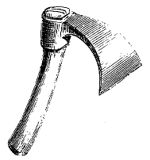

Figure 2
Eugène VIOLLET le DUC
Dictionnaire raisonné du mobilier.
 Figure 1 HERMINETTE, s. f. Outil de charpentier, de menuisier et de tonnelier, composé d'un fer battu, plat, recourbé, présentant son taillant très large perpendiculairement au manche (fig. 1). La forme de l'herminette est restée à peu près ce qu'elle était pendant les XIV et XVe siècles. Cet outil remonte à la plus haute antiquité et certaines de ces pierres taillées et polies, dites haches de l'âge de pierre, étaient certainement emmanchées en manière d'herminette ; ce sont celles qui sont plates avec queue longue et terminées carrément. Comme preuve, on peut donner une herminette égyptienne que possède le musée du Louvre (fig. 2). Le taillant de cet outil est forgé ainsi que l'embrasse de fer A. Le coin B ainsi que le manche à double courbure sont de bois. Il y a tout lieu de croire que les premières herminettes de pierre, et plus tard celles forgées, étaient emmanchées de cette façon. Dans le premier cas, l'embrasse de fer A était remplacée par un lien de cordelles.